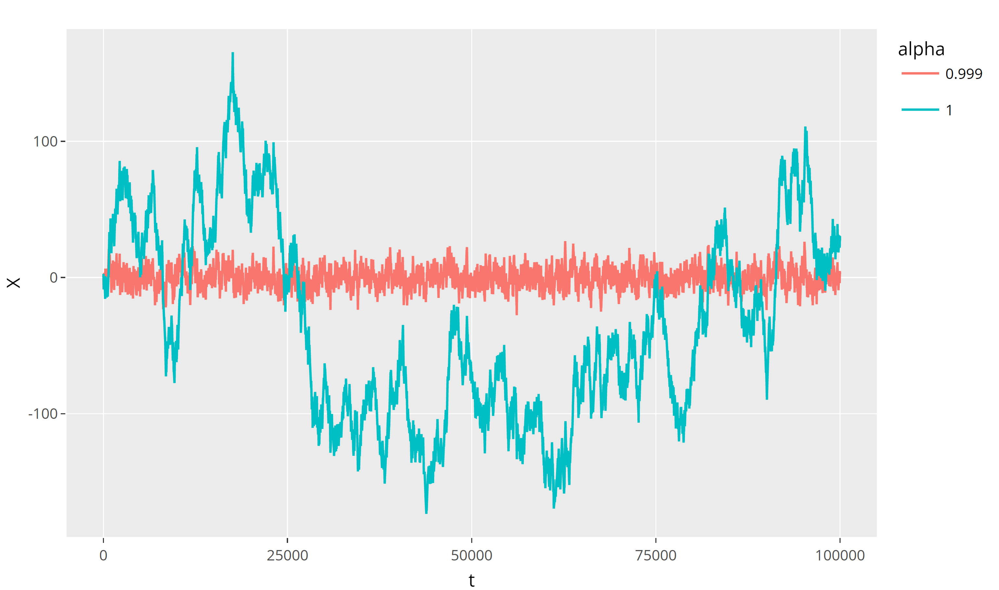

5 Time series
Let \((\Omega,\mathcal{A},\mathbb{P})\) be a probability space and \((S,\mathcal{S})\) be a measurable state space.
Let \(J\) be a set, whose points are usually interpreted as moments of time, i.e. \(J\subset\mathbb{R}_+:=[0,\infty)\).
A stochastic process (a.k.a. random process) is a collection of \(S\)-valued random variables parametrized by \(t\in J\): \[ \{X(t): \Omega\to S \mid t\in J\}. \]
We have hence \(X(t)=X(t,\omega)\), \(t\in J\), \(\omega\in\Omega\), i.e. one can think about a stochastic process as a function of two variables.
We will normally omit \(\omega\) and write \(t\) as a subscript: \[ X_t:=X(t)=X(t,\omega). \]
If \(J\) is continuous set, e.g. \(J=\mathbb{R}_+=[0,\infty)\), then \(\{X_t\mid t\in J\}\) is called a continuous time stochastic process.
If \(J\) is a discrete set, e.g. \(J=\mathbb{Z}_+=\{0,1,2,\ldots\}\), then \(\{X_t\mid t\in J\}\) is called a discrete time stochastic process. In this case, we will sometimes write \(n\) instead of \(t\).
Recall that a stochastic process is a function of two variables, \(t\) and \(\omega\). If we fix an \(\omega\in\Omega\), the set \(\{X_t(\omega)=X(t,\omega) \mid t\in J\}\) is called a sample path of the process (for the chosen \(\omega\)).
Time series is the sample path of a discrete time stochastic process. Often, however, this term is used for the stochastic process itself. Another term, which you may find in the literature, is . We will deal with real-valued time series, i.e. \(S\subset\mathbb{R}\). We may also assume that \(J\subset\mathbb{Z}\).
A time series process \(\{X_t\}\) is called strictly stationary if, for all \(n\in\mathbb{N}\) and for all \(k,t_1,\ldots,t_n \in J\) such that \(t_1+k,\ldots,t_n+k\in J\), the joint distributions of random variables \(X_{t_1},\ldots, X_{t_n}\) and \(X_{t_1+k},\ldots, X_{t_n+k}\) are identical.
In other words, for all \(\Delta_1,\ldots,\Delta_n\in\mathcal{S}\),
\[ \mathbb{P}\bigl( X_{t_1+k}\in \Delta_1, \ldots, X_{t_n+k}\in \Delta_n\bigr) \tag{5.1}\]
does not depend on \(k\).
Stress that, normally, the (random) values of \(X_t\) at different moments of time \(t\) are not independent, hence, the probability in (5.1) is not the product of the corresponding probabilities \(\mathbb{P}(X_{t_i+k}\in \Delta_i)\).
A time series process \(\{X_t\}\) is called weakly stationary, if the following conditions hold:
\(\mathbb{E}(X_t)\) does not depend on \(t\in J\) (i.e. it is a constantin \(t\));
\(\mathbb{E}(X_t^2)<\infty\) for each \(t\in J\);
For each \(s\in J\),
\[ \begin{aligned} \mathrm{cov}\,(X_t,X_{t+s}):&=\mathbb{E}\bigl((X_t-\mathbb{E}(X_t))(X_s-\mathbb{E}(X_s))\bigr)\\ & = \mathbb{E}(X_t\, X_{t+s})-\mathbb{E}(X_t)\,\mathbb{E}(X_{t+s}) \end{aligned} \]
does not depend on \(t\in J\) (assuming that \(t+s\in J\)). Equivalently, \(\mathrm{cov}\,(X_t,X_s)\) depends on the lag \(s-t\) only (for \(s>t\)).
In particular, \(\mathrm{Var}\,(X_t)=\mathrm{cov}\,(X_t,X_t)\) does not depend on \(t\) (here \(s=0\)).
Let \(\{X_t\}\) be a strictly stationary stochastic process and \(\mathbb{E}(X_t^2)<\infty\). Then \(\{X_t\}\) is weakly stationary.
For a (weakly) stationary time series, the function
\[ \gamma_s:=\mathrm{cov}\,(X_t,X_{t+s}), \qquad s\in J, \tag{5.2}\]
is called the autocovariance function.
For a (weakly) stationary time series, the autocorrelation function is
\[ \rho_s:=\mathrm{corr}\,(X_t,X_{t+s})=\frac{\mathrm{cov}\,(X_t,X_{t+s})}{\sqrt{\mathrm{Var}\,(X_t)}\sqrt{\mathrm{Var}\,(X_{t+s})}}=\frac{\gamma_s}{\gamma_0}. \tag{5.3}\]
Let \(J=\mathbb{Z}\). Then the autocovariance and autocorrelation functions are even functions.
Let \(Y\) and \(Z\) be two uncorrelated identically distributed random variables with zero mean and variance \(\sigma^2\); i.e. \(\mathrm{cov}\,(Y,Z)=0\), \(\mathbb{E}(Y)=\mathbb{E}(Z)=0\), \(\mathrm{Var}\,(Y)=\mathrm{Var}\,(Z)=\sigma^2\).
Let \(\lambda \in[0,2\pi]\) be a fixed number, and consider a continuous-time random process \[ X_t = Y \cos(\lambda t) + Z\sin (\lambda t), \quad t\in\mathbb{R}_+. \]
Then (check!) \[ E(X_t)=0, \quad E(X_t^2)=\sigma^2<\infty, \]
and
\[ \begin{aligned} &\quad \mathrm{cov}\,(X_t,X_{t+s}) = \mathbb{E}(X_tX_{t+s}) \\ &= \mathbb{E}\bigl(Y^2\cos(\lambda t)\cos(\lambda (t+s)) +Z^2\sin(\lambda t)\sin(\lambda (t+s))\bigr) \\&=\sigma^2 \cos(\lambda s)=:\gamma_s, \end{aligned} \]
hence \(\{X_t\}\) is weakly stationary, and \(\rho_s=\cos(\lambda s)\).
A time series process \(\{e_t\}\) is called a white noise iff
\[ \mathbb{E}(e_t)=0, \qquad \mathrm{cov}\,(e_t,e_{t+s})=\begin{cases} \sigma^2, & \text{if } s=0,\\ 0, & \text{otherwise}. \end{cases} \]
In other words, the white noise is an example of a weakly stationary time series of uncorrelated random variables with zero mean.
Let \(X=\{X_t\}\) be a time series process.
The backward shift operator \(B\) is given by \[ (BX)_t = X_{t-1}. \tag{5.4}\]
The difference operator \(\nabla:=1\!\!1-B\) is given by \[ (\nabla X)_t = X_t-X_{t-1}. \tag{5.5}\]
Both operators can be applied repeatedly, e.g.
\[ \begin{aligned} (B^2X)_t &= (BX)_{t-1}= X_{t-2},\\ (\nabla^2 X)_t & =X_t-2X_{t-1}+X_{t-2},\\ (B\nabla X)_t & =X_{t-1}-X_{t-2}=(\nabla B X)_t. \end{aligned} \]
This shows that \(B\) and \(\nabla\) commute, that is clear also from \(\nabla=1\!\!1-B\). The latter formula allows to simplify calculations (henceforce, we will omit brackets: e.g. \(\nabla X_t\) instead of \((\nabla X)_t\), unless it may lead to misunderstanding):
\[ \begin{aligned} \nabla^3 X_t & = (1\!\!1-B)^3 X_t \\& = (1\!\!1-3B+3B^2-B^3)X_t \\ & = X_t -3X_{t-1}+3X_{t-2}-X_{t-3}. \end{aligned} \]
We can also rewrite expressions using difference operators, e.g.
\[ \begin{aligned} &\quad X_t-5X_{t-1}+7X_{t-2}-3X_{t-3}\\ &=X_t-X_{t-1}-4X_{t-1}+4X_{t-2}+3X_{t-2}-3X_{t-3}\\ &=\nabla X_t -4\nabla X_{t-1}+3\nabla X_{t-2}\\ & =\nabla X_t-\nabla X_{t-1}-3\nabla X_{t-1}+3\nabla X_{t-2}\\ & = \nabla^2 X_t -3\nabla^2 X_{t-1}. \end{aligned} \]
Let \(Y_t=\nabla X_t=X_t-X_{t-1}\), \(t\in \mathbb{N}\). Then
\[ \begin{aligned} X_t&= Y_t+X_{t-1}= Y_t+Y_{t-1}+X_{t-2}=\ldots\\ &=X_0 +Y_t+Y_{t-1}+Y_{t-2}+\ldots +Y_1\\ & =X_0 +Y_t+BY_t+B^2Y_t + \ldots +B^{t-1}Y_t\\ & = X_0+(1\!\!1+B+B^2+\ldots +B^{t-1})Y_t, \end{aligned} \]
where \(1\!\!1 =B^0\) is the identity operator. Note that the last brackets contain \(t\) summands.
Let \(q\in\mathbb{N}\). The moving average process, \(MA(q)\) of the order \(q\) is:
\[ X_t=\mu+e_t+\beta_1 e_{t-1}+\ldots +\beta_q e_{t-q}, \tag{5.6}\]
where \(\mu\in\mathbb{R}\) and \(e_t\) is the white noise.
It can be rewritten:
\[ X_t-\mu =\bigl( 1\!\!1+\beta_1 B+\beta_2 B^2 +\ldots+\beta_q B^q \bigr)e_t. \tag{5.7}\]
Clearly, since \(\mathbb{E}(e_t)=0\) and \(\mathrm{Var}\,(e_t)=\sigma^2\), we have \[ \mathbb{E}(X_t)=\mu, \qquad \mathrm{Var}\,(X_t)=\sigma^2\biggl(1+\sum_{k=1}^q \beta_k^2\biggr). \]
Moreover, setting \(\beta_0:=1\), we have
\[ \begin{aligned} \mathrm{cov}\,(X_t,X_{t+s})&=\mathrm{cov}\,(X_t-\mu,X_{t+s}-\mu)\\&=\mathbb{E}\bigl((X_t-\mu)(X_{t+s}-\mu)\bigr)\\&= \sum_{k=0}^q\sum_{j=0}^q \beta_k\beta_j \mathbb{E}\bigl(e_{t-k} e_{t+s-j}\bigr)\\&= \sum_{k=0}^q\sum_{j=0}^q \beta_k\beta_j \mathrm{cov}\,(e_{t-k},e_{t+s-j})\\ & = \sum_{k=0}^{q-s}\beta_k\beta_{k+s} \sigma^2. \end{aligned} \]
In particular, .
We can consider, for the polynomial
\[ \psi(z)=1+\beta_1z+\beta_2 z^2+\ldots+\beta_q z^q, \tag{5.8}\]
the operator polynomial
\[ \psi(z)=1\!\!1+\beta_1 B+\beta_2 B^2+\ldots+\beta_q B^q, \tag{5.9}\]
where \(1\!\!1\) is the unit operator. Then, we can rewrite (5.6)–(5.7):
\[ X_t-\mu = \psi(B) e_t. \tag{5.10}\]
An \(MA(q)\) process (5.6) is called invertible, if the noise at time \(t\) can be represented through the values of the process at times \(s\leq t\):
\[ e_t =\mathrm{const}+ X_t +\nu_1 X_{t-1}+\ldots+\nu_q X_{t-q}+\ldots, \tag{5.11}\]
for some \(\nu_k\in\mathbb{R}\), such that
\[ \sum\limits_{k=1}^\infty\lvert\nu_k\rvert<\infty. \tag{5.12}\]
The latter condition ensures that \(\mathrm{Var}\,(e_t)<\infty\).
In other words, \(MA(q)\) process is invertible if the operator \(\psi(B)\) in (5.10) is invertible:
\[ e_t=\psi(B)^{-1}(X_t-\mu). \tag{5.13}\]
Let \(MA(q)\) process (5.6) be given. Consider its characteristic equation
\[ 1+\beta_1z+\beta_2 z^2+\ldots+\beta_q z^q=0. \tag{5.14}\]
Let all the roots of this characteristic equation (including complex roots) lie outside the unit circle on the complex plain, i.e. let \(|z_k|>1\) for all roots \(z_1,\ldots,z_q\) of (5.14). Then \(MA(q)\) process (5.6) is invertible. The opposite statement is also true.
For \(q=1\), the proof of the previous theorem becomes especially simple. Namely, then (denoting \(\beta:=\beta_1\)) \[ \begin{aligned} e_t&=X_t-\mu - \beta e_{t-1}\\&=X_t-\mu - \beta (X_{t-1}-\mu - \beta e_{t-2})=\ldots \\&= (X_t-\mu) -\beta (X_{t-1}-\mu)\\&\quad +\beta^2 (X_{t-2}-\mu)-\beta^3(X_{t-3}-\mu)+\ldots \\&=c+\sum_{k=0}^\infty (-\beta)^k X_{t-k}, \end{aligned} \]
where, for \(|\beta|<1\) only,
\[ c= -\mu\sum_{k=0}^\infty (-\beta)^k=-\frac{\mu}{1+\beta}. \]
Let \(\nu_k:=(-\beta)^k\) with \(|\beta|<1\), then we get \[ \sum\limits_{k=1}^\infty \lvert\nu_k\rvert=\frac{1}{1-\lvert\beta\rvert}<\infty. \]
Actually, we have shown that, for \(|\beta|<1\), \[ (1\!\!1+\beta B)^{-1} = 1\!\!1-\beta B+\beta^2 B^2-\beta^3 B^3+\ldots. \]
The characteristic equation is then \(1+\beta z=0\) and its the only root is \(z=-\frac{1}{\beta}\), thus, \(|z|>1\) iff \(|\beta|<1\).
Let \(p\in\mathbb{N}\). The autoregressive process \(AR(p)\) is defined by
\[ X_t = \mu + \alpha_1 (X_{t-1}-\mu)+\ldots+\alpha_p (X_{t-p}-\mu)+e_t, \tag{5.15}\]
where \(\mu\in\mathbb{R}\) and \(\{e_t\}\) is a white noise process.
Define the polynomial \[ \phi(z)=1-\alpha_1 z-\ldots-\alpha_p z^p. \]
Using the backward shift operator \(B\), one can rewrite (5.15):
\[ \phi(B)(X_t-\mu)=e_t, \tag{5.16}\]
where
\[ \phi(B)=1\!\!1-\alpha_1 B-\ldots-\alpha_p B^p. \tag{5.17}\]
We are interested in conditions under which \(\{X_t\}\) is weakly stationary.
Note that \(AR(p)\) process is always invertible in this sense, by the very definition (5.15).
The characteristic equation associated with \(AR(p)\) process (5.15) is \(\phi(z)=0\), i.e.
\[ 1-\alpha_1 z-\alpha_2 z^2-\ldots-\alpha_p z^p=0. \tag{5.18}\]
Assume that all (complex) roots of (5.18) satisfy \(|z_k|>1\).
Then the operator \(\phi(B)\) is invertible and \[ \phi(B)^{-1}=\sum_{k=0}^\infty \psi_k B^k, \]
where the coefficients satisfy \[ \sum_{k=0}^\infty |\psi_k| < \infty. \]
Consequently,
\[ X_t-\mu=\sum_{k=0}^\infty \psi_k e_{t-k}. \tag{5.20}\]
Let \(X_t=\mu+\alpha(X_{t-1}-\mu)+e_t\). The characteristic equation is \[ 1-\alpha z=0, \qquad z=\frac1\alpha. \] The process is stationary iff \(|\alpha|<1\). In that case,
\[ \begin{gathered} (1-\alpha B)^{-1} = \sum_{k=0}^\infty \alpha^k B^k, \\ X_t-\mu=\sum_{k=0}^\infty \alpha^k e_{t-k}. \end{gathered} \]
Example: \(AR(1)\), \(\alpha_1=\alpha\), \(z_1=\frac{1}{\alpha}\)

We consider now a natural combination of \(AR(p)\) and \(MA(q)\). Let \[ X_t-\mu = \alpha_1 (X_{t-1}-\mu)+\ldots +\alpha_p (X_{t-p}-\mu) + e_t+\beta_1 e_{t-1}+\ldots +\beta_q e_{t-q}. \tag{5.21}\]
Or, it can be rewritten:
\[ \phi(B)(X_t-\mu)=\psi(B) e_t. \tag{5.22}\]
- An \(ARMA(p,q)\) process if weakly stationary iff its \(AR(p)\) is weakly stationary, i.e. iff all the roots of \[ 1 - \alpha_1 z -\alpha_2 z^2 - \ldots -\alpha_p z^p=0 \]
lie outside the unit circle on the complex plane.
- An \(ARMA(p,q)\) process is invertible (i.e. there exists an expansion (5.11)) iff its \(MA(q)\) is invertible, i.e. iff all the roots of \[ 1+\beta_1z+\beta_2 z^2+\ldots+\beta_q z^q=0 \] lie outside the unit circle on the complex plane.
Assume that \(\{X_t\}\) is a weakly stationary \(ARMA(p,q)\) process. We extend the definition (5.2) of the autocovariance function to all integer indexes: for \(s\geq0\), \(\gamma_{-s}:=\gamma_s\), so
\[ \mathrm{cov}\,(X_t,X_s)=:\gamma_{t-s}=\gamma_{s-t}. \tag{5.23}\]
- For every \(s>q\geq0\), the autocovariances satisfy
\[ \gamma_s=\alpha_1\gamma_{s-1}+\cdots+\alpha_p\gamma_{s-p}. \tag{5.24}\]
- Let \(q=1\), i.e. \(\{X_t\}\) is a weakly stationary \(ARMA(p,1)\) process. Then (5.24) holds for all \(s\geq2\), and, moreover, for \(\beta:=\beta_1\), \(\mathrm{Var}\,(e_t)=\sigma^2\),
\[ \gamma_0=\alpha_1\gamma_1+\cdots+\alpha_p\gamma_p+(1+\alpha_1\beta+\beta^2)\sigma^2, \tag{5.25}\]
\[ \gamma_1=\alpha_1\gamma_0+\cdots+\alpha_p\gamma_{p-1}+\beta\sigma^2 \tag{5.26}\]
- In particular, for a weakly stationary \(ARMA(1,1)\) process \[ X_t=\mu +\alpha(X_{t-1}-\mu)+e_t+\beta e_{t-1}, \]
one has \[ \gamma_0=\alpha\gamma_1+(1+\alpha\beta+\beta^2)\sigma^2, \tag{5.27}\]
\[ \gamma_1=\alpha\gamma_0+\beta\sigma^2, \tag{5.28}\]
\[ \gamma_s=\alpha^{s-1}\gamma_1, \quad s\geq2. \tag{5.29}\]
A process \(X_t\) is called an \(ARIMA(p,j,q)\) process if \(X_t\) is not weakly stationary, but \(\nabla^j X_t\) is a weakly stationary \(ARMA(p,q)\) process.
Let \(X_t=X_{t-1}+e_t\), then \(X_t\) is not weakly stationary, but \(Y_t=\nabla X_t = e_t\) is weakly stationary \(ARMA(0,0)\) process, thus \(X_t\) is an \(ARIMA(0,1,0)\) process.
Denote \(Y_t=\nabla^j X_t=(1\!\!1-B)^j X_t\). Assume, for simplicity, that \(\mathbb{E}(X_t)=0\) (but \(\mathrm{Var}\,(X_t)\) depends on \(t\)), then \(\mathbb{E}(Y_t)=0\) and if \(Y_t\) is an \(ARMA(p,q)\), it should satisfy (5.22) with \(\mu=0\).
Then (5.22) takes the form
\[ \phi(B)(1\!\!1-B)^j X_t =\psi(B) e_t. \tag{5.30}\]
Therefore, if we consider the \(AR\)-characteristic equation for process \(X_t\), it will have the form
\[ (1-z)^j\phi(z)=0, \tag{5.31}\]
i.e. it has the root \(1\) of multiplicity \(j\). If all other roots lie outside the unit circle, \(X_t\) is an \(ARIMA(p,j,q)\) process.
Let \[ X_t=0.6X_{t-1}+0.3 X_{t-2}+0.1X_{t-3}+e_t-e_{t-1}. \] The \(AR\)-characteristic equation is \[ 1-0.6z-0.3z^2-0.1z^3=0. \] It is easy to see that \(z=1\) is a root. Using the long division rule, or just rewriting
\[ \begin{gathered} 1-z+ 0.4z-0.4z^2+0.1z^2-0.1z^3=0, \\ (1-z)(1+0.4z+0.1z^2)=0, \end{gathered} \]
we get that \[ z^2+4z+10=0, \qquad z=-2\pm i\sqrt{6}, \] and \(|z|=\sqrt{10}>1\). Therefore, \(X_t\) is an \(ARIMA(2,1,1)\) process, i.e. \(\nabla X_t\) is a weakly stationary \(ARMA(2,1)\) process.